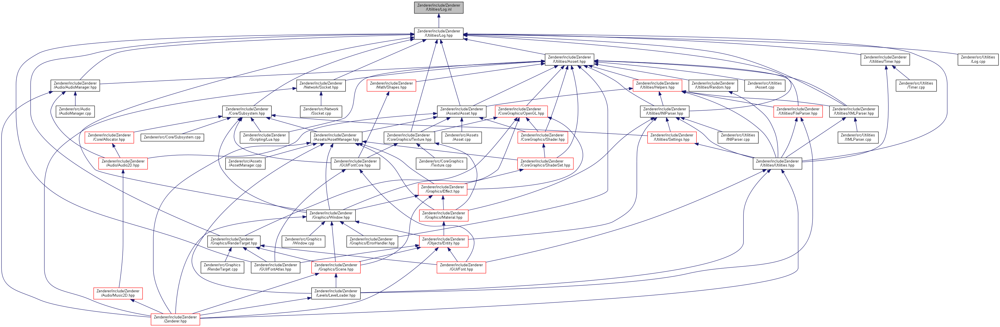

Zenderer Engine
3.0.0-alpha
A OpenGL-based 2D engine. Currently at 9447 lines of code.
Main Page
Related Pages
Modules
Data Structures
Files
Examples
File List
Globals
All
Data Structures
Namespaces
Files
Functions
Variables
Typedefs
Enumerations
Enumerator
Friends
Groups
Pages
Log.inl File Reference
This graph shows which files directly or indirectly include this file:

Go to the source code of this file.
Zenderer
include
Zenderer
Utilities
Log.inl
Generated by
1.8.4
 1.8.4
1.8.4